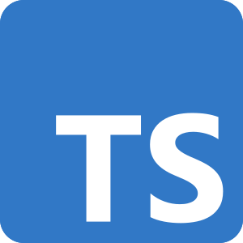

Lenguajes de Programación mas Populares
1. JavaScript
Introducción: Lenguaje de programación ampliamente utilizado en el desarrollo web.
Características: Interpretable, basado en prototipos, multipropósito.
Aplicaciones: Desarrollo web, aplicaciones móviles, juegos.
Ventajas: Popularidad, comunidad activa, facilidad de uso.
Desventajas: Poca seguridad en el lado del cliente.
2. Python

Introducción: Lenguaje de programación de alto nivel, conocido por su legibilidad.
Características: Multipropósito, fácil de aprender, soporte para múltiples paradigmas.
Aplicaciones: Desarrollo web, análisis de datos, inteligencia artificial.
Ventajas: Gran comunidad, muchas bibliotecas disponibles.
Desventajas: Rendimiento inferior en comparación con lenguajes compilados.
3. Java

Introducción: Lenguaje de programación orientado a objetos, diseñado para ser portátil.
Características: Compilado a bytecode, fuerte tipado, multiplataforma.
Aplicaciones: Desarrollo de aplicaciones empresariales, Android.
Ventajas: Seguridad, rendimiento, comunidad amplia.
Desventajas: Verbosidad del código.
4. C#

Introducción: Lenguaje de programación desarrollado por Microsoft, utilizado principalmente para desarrollo en Windows.
Características: Orientado a objetos, fuerte tipado, integración con .NET.
Aplicaciones: Desarrollo de software empresarial, juegos, aplicaciones de escritorio.
Ventajas: Buen rendimiento, potente IDE (Visual Studio).
Desventajas: Principalmente en el ecosistema de Microsoft.
5. C++

Introducción: Lenguaje de programación de propósito general, extensible a C.
Características: Soporte a programación de bajo nivel, orientado a objetos, alto rendimiento.
Aplicaciones: Desarrollo de sistemas, videojuegos, aplicaciones de rendimiento crítico.
Ventajas: Control total sobre recursos del sistema.
Desventajas: Complejidad en el manejo de la memoria.
6. Ruby
Introducción: Lenguaje de programación interpretado, conocido por su sintaxis elegante.
Características: Orientado a objetos, fácil de leer y escribir.
Aplicaciones: Desarrollo web, scripting.
Ventajas: Productividad, comunidad activa.
Desventajas: Velocidad en ejecución más lenta.
7. PHP

Introducción: Lenguaje de programación para desarrollo web del lado del servidor.
Características: Interpretable, ampliamente utilizado en el desarrollo de sitios web dinámicos.
Aplicaciones: Desarrollo de sitios web, sistemas de gestión de contenido.
Ventajas: Amplia comunidad, integración fácil con bases de datos.
Desventajas: Inseguro si no se codifica correctamente.
8. Swift
Introducción: Lenguaje de programación desarrollado por Apple para el desarrollo de iOS y macOS.
Características: Seguro, rápido y expresivo.
Aplicaciones: Desarrollo de aplicaciones móviles para iOS.
Ventajas: Sintaxis moderna, rendimiento optimizado.
Desventajas: Solo para plataformas Apple.
9. TypeScript
Introducción: Un superconjunto de JavaScript que añade tipado estático.
Características: Mejora la legibilidad y mantenibilidad del código.
Aplicaciones: Desarrollo web, aplicaciones grandes y escalables.
Ventajas: Menos errores en tiempo de ejecución.
Desventajas: Curva de aprendizaje más pronunciada.
10. Go

Introducción: Lenguaje de programación desarrollado por Google, conocido por su eficiencia y simplicidad.
Características: Compilado, soporte para concurrencia.
Aplicaciones: Microservicios, desarrollo de backend.
Ventajas: Alto rendimiento, fácil de aprender.
Desventajas: Menor soporte para bibliotecas que lenguajes más antiguos.
11. Kotlin
Introducción: Lenguaje moderno que se ejecuta en la JVM y es interoperable con Java.
Características: Conciso, seguro, y compatible con Java.
Aplicaciones: Desarrollo de aplicaciones Android, aplicaciones de servidor.
Ventajas: Reduce la cantidad de código.
Desventajas: Menos recursos en comparación con Java.
12. R
Introducción: Lenguaje de programación para análisis estadístico y gráficos.
Características: Orientado a objetos, extensible.
Aplicaciones: Ciencia de datos, análisis estadístico.
Ventajas: Amplia variedad de bibliotecas estadísticas.
Desventajas: Más lento en comparación con otros lenguajes.
13. Dart
Introducción: Lenguaje de programación de Google, utilizado para crear aplicaciones móviles.
Características: Compilado, fácil de aprender.
Aplicaciones: Desarrollo de aplicaciones móviles y web con Flutter.
Ventajas: Alto rendimiento en móviles.
Desventajas: Menor comunidad comparado con otros lenguajes.
14. Scala

Introducción: Lenguaje de programación que combina paradigmas de programación funcional y orientada a objetos.
Características: Compilado a Java bytecode, interoperable con Java.
Aplicaciones: Desarrollo web, sistemas distribuidos.
Ventajas: Expresivo y conciso.
Desventajas: Curva de aprendizaje pronunciada.
15. Rust
Introducción: Lenguaje de programación de sistemas enfocado en la seguridad y el rendimiento.
Características: Compilado, enfocado en la concurrencia.
Aplicaciones: Sistemas embebidos, desarrollo de sistemas.
Ventajas: Alta seguridad en la memoria.
Desventajas: Curva de aprendizaje alta.
16. Elixir
Introducción: Lenguaje funcional y concurrente que se ejecuta en la máquina virtual de Erlang.
Características: Escalable, tolerante a fallos.
Aplicaciones: Desarrollo de aplicaciones web y sistemas distribuidos.
Ventajas: Soporte para concurrencia.
Desventajas: Menor comunidad en comparación con otros lenguajes.
17. Clojure
Introducción: Lenguaje de programación funcional y de propósito general que se ejecuta en la JVM.
Características: Inmutable, conciso.
Aplicaciones: Desarrollo web, análisis de datos.
Ventajas: Interoperabilidad con Java.
Desventajas: Curva de aprendizaje alta.
18. Shell Scripting
Introducción: Lenguaje utilizado para escribir scripts para automatizar tareas en sistemas operativos Unix.
Características: Simple, potente.
Aplicaciones: Automatización de tareas, administración de sistemas.
Ventajas: Facilidad de uso para tareas repetitivas.
Desventajas: Limitado en funcionalidad para aplicaciones complejas.
19. MATLAB

Introducción: Lenguaje de programación utilizado para cálculos matemáticos y visualización.
Características: Ideal para la manipulación de matrices.
Aplicaciones: Ciencia e ingeniería, procesamiento de señales.
Ventajas: Herramientas específicas para matemáticas y visualización.
Desventajas: Costoso y propietario.
20. Groovy
Introducción: Lenguaje dinámico que se ejecuta en la JVM, conocido por su sintaxis similar a Java.
Características: Dinámico, flexible.
Aplicaciones: Desarrollo web, scripting.
Ventajas: Interoperable con Java, sintaxis sencilla.
Desventajas: Rendimiento inferior en comparación con Java.